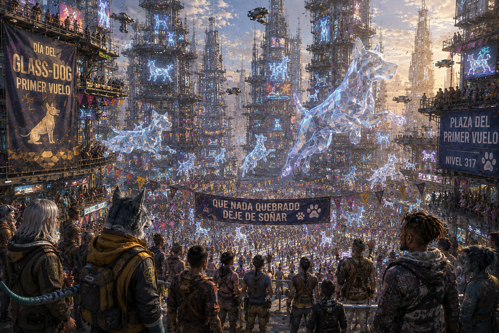

MÓDULO — El Glass-Dog que nadie vio
Colección de one-shots de MadCity — episodio 1 de 6. Estado: BORRADOR, pendiente de playtest.
«Si vuelve a volar, dicen que será una señal. De qué, nadie se pone de acuerdo.»

La Plaza del Primer Vuelo en plena fiesta — en algún punto de esa multitud de luces falsas, una es real.
Resumen operativo — léelo antes de dirigir
Premisa: hoy es 25 de mayo, el Día del Glass-Dog en MadCity. La Plaza del Primer Vuelo se llena de plataformas, puestos, drones civiles y proyecciones aéreas para la fiesta. Nadie sabe que, dentro de un contenedor declarado como "equipo de proyección", viaja un Glass-Dog real — transportado de matute para un comprador privado. Un accidente durante el montaje abre el contenedor. La criatura escapa entre docenas de falsos Glass-Dog (drones, hologramas, disfraces), y casi nadie llega a entender que uno de ellos es de carne y hueso.
Duración: una sesión de 4-6 horas. Cinco escenas, escala local: una criatura, tres traficantes, un rincón de la Plaza y de la Pasarela de las Mil Fachadas. Esto no decide el destino de MadCity.
Qué saben los PJ: que hoy es fiesta grande, que ha habido "un accidente técnico" durante el montaje, y que algo se ha colado entre las proyecciones — la mayoría cree que es un fallo de drones, no un animal real.
Verdad del Narrador: el Glass-Dog es real, está asustado, y no ha vuelto para anunciar nada. Que la gente lo interprete como presagio es parte de MadCity, no un hecho confirmado por este módulo.
Objetivo inmediato: encontrar a la criatura y decidir qué hacer con ella antes de que empiece el vuelo ceremonial de proyecciones — momento en que se activan barreras, tráfico aéreo regulado y sistemas de seguridad que pueden atraparla o herirla.
Pregunta de fondo: ¿a quién pertenece algo que nadie sabía que existía hasta que apareció asustado en medio de una fiesta?
Si nadie interviene: los traficantes la recuperan antes que nadie, la sedan y la sacan de la Plaza en un carro de mantenimiento disfrazado de atrezo. Nadie en la fiesta llega a confirmar que fue real.
Desarrollo en cinco escenas
- Una figura que sangra luz — accidente y primer avistamiento ambiguo.
- Demasiados perros de cristal — investigación entre puestos, proyecciones y testigos contradictorios.
- Carrera por las fachadas — persecución por la Pasarela, balcones y rutas de mantenimiento.
- Todo el mundo tiene dueño — choque con los traficantes, la seguridad y quien quiere protegerla.
- El primer vuelo — resolución durante la ceremonia.
Panel del Narrador — léelo antes de sentarte a la mesa
Reloj — cuatro horas hasta el vuelo ceremonial:
| Tiempo | Qué ocurre |
|---|---|
| H+0:00 | Accidente durante el montaje. Escena 1 empieza aquí. |
| H+0:30 | Si nadie ha actuado, el Glass-Dog ya ha cruzado media Plaza; Aldric y Bram empiezan a peinarla con discreción. |
| H+1:30 | La criatura, agotada de esquivar gente, busca una salida menos concurrida — empieza a moverse hacia la Pasarela. |
| H+2:30 | Se refugia en la Pasarela de las Mil Fachadas (Escena 3). Los traficantes llegan casi a la vez que cualquiera que la esté buscando. |
| H+3:30 | Empiezan a activarse barreras de seguridad y tráfico aéreo regulado de cara al vuelo — cualquier persecución a partir de aquí es más peligrosa. |
| H+4:00 | Vuelo ceremonial de proyecciones. Escena 5. Lo que no se haya resuelto antes, se resuelve aquí, en público. |
Cómo avanza el tiempo de ficción: no lo simules minuto a minuto — avanza el reloj cuando los PJ cambien de zona, investiguen a fondo o decidan esperar.
- Preguntar a un grupo de testigos, examinar el contenedor: 10-15 min.
- Cruzar la Plaza del Primer Vuelo de un extremo a otro: 10 min caminando entre la multitud, 5 min si alguien abre paso (Social o Intimidación).
- Plaza → Pasarela de las Mil Fachadas: 15-20 min por la ruta pública, 10 min por una ruta de mantenimiento si alguien la conoce o la encuentra.
- Cada tramo de persecución por la Pasarela (Escena 3): 10-15 min.
- Negociar o esperar una respuesta de cualquier PNJ: 10-20 min.
Las tres partes, en una frase:
- Los traficantes → recuperar la mercancía antes de perderla y de que Aldric no pueda pagar lo que debe.
- Karel (si se implica) → proteger a un animal real de una ciudad que no sabe qué hacer con él.
- Juno Arca / seguridad → que nadie muera ni cunda el pánico durante la fiesta, sea lo que sea "eso".
No hay villano. Aldric debe un dinero que no es suyo y esto era su forma de pagarlo; Yuen no quiere que la criatura sufra; Bram solo quiere cobrar y volver a casa. La violencia solo aparece si alguien fuerza una confrontación directa.
El Glass-Dog, en mesa: no negocia ni razona — es un animal asustado. Se aparta de los ruidos fuertes y las luces intensas, busca huecos oscuros y estrechos, y solo muerde si lo acorralan sin salida. Su piel sangra un hilo de luz tenue por la herida del choque: es su rastro, y también lo que lo delata entre las proyecciones falsas si alguien se fija de cerca.
Lo que ocurrió realmente
Verdad completa
Aldric Ferro organizó el transporte de un Glass-Dog vivo, capturado meses atrás por una red de captura ilegal en las zonas bajas, para un comprador privado de los niveles altos que colecciona rarezas biológicas. El contenedor se declaró como "equipo de proyección" para pasar sin preguntas durante el montaje de la fiesta — un truco habitual, no una novedad para quien organiza estas cosas.
Un choque con una plataforma de carga durante el montaje abrió el contenedor. El Glass-Dog escapó en pánico justo cuando decenas de drones decorativos y hologramas con forma de Glass-Dog empezaban a probar sus rutas de vuelo para la ceremonia — así que casi nadie que lo vio pasar entiende que era distinto de las docenas de falsos.
No ha vuelto para anunciar el fin de un Ciclo. Es una criatura asustada, herida levemente por el choque, en una ciudad enorme y ruidosa. Que la población interprete otra cosa forma parte de MadCity, y este módulo no debe confirmarlo ni desmentirlo del todo.
Qué saben los PJ y qué no
Pueden llegar a saber todo lo anterior investigando. Lo que no deben poder resolver desde el principio es si el avistamiento significa algo — eso lo decide la mesa en la Escena 5, no este documento.
Tono
Fiesta, humor urbano, un poco de persecución de acción física, y una decisión final con peso emocional pero sin villano que castigar. Aldric, Yuen y Bram deben resultar comprensibles, no despreciables.
Textura de fiesta (1d6, para ambientar sin planificar)
Úsala dos o tres veces entre las Escenas 1 y 2, no en cada turno:
| d6 | Momento |
|---|---|
| 1 | Un vendedor ofrece a los PJ una figurita de cristal "de la buena suerte" — la compró esta mañana en el Mercado de los Siete Remaches, donde medio puesto vende motivos del Día del Glass-Dog. |
| 2 | Un grupo de niños disfrazados de Glass-Dog corre gritando justo en la dirección contraria, tapando la vista un momento. |
| 3 | Una proyección aérea falla y proyecta, un segundo, una silueta gigante — confusión general, nadie herido. |
| 4 | Alguien graba a los PJ pensando que forman parte del espectáculo. |
| 5 | Un puesto de comida derrama algo pegajoso justo en la ruta de persecución. |
| 6 | Un organizador nervioso pide ayuda para "controlar a la gente" antes de que alguien note el accidente. |
Reparto y relaciones
El Glass-Dog
Ficha vigente, sin modificar por ser "especial" (Bestiario): F35/A55/P40 | PV 20/20/20 | Bld 1 | 65% | Daño 7. Piel translúcida, ventaja en Sigilo en poca visibilidad. Herida leve por el choque (Herido desde el inicio del módulo, no Sano). Prioriza huir; solo ataca si lo acorralan sin salida.
Aldric Ferro — organizador del transporte
Aspecto: traje de fiesta un poco demasiado bueno para pasar por técnico, corbata aflojada, suda a pesar del clima controlado de la Plaza, mira el reloj cada pocos segundos.
PNJ interpretable (4 profesiones). Debe dinero a un prestamista de Escorpio y esta venta era su forma de saldarlo. Nervioso, rápido de palabra, más asustado del prestamista que de la ley.
F25/A30/P45/V40 | PV 14/14/14 | Bld 1 | Social/Regateo 55% | Sigilo 30%
- Quiere recuperar al Glass-Dog vivo y sin testigos.
- No matará a nadie ni pondrá en peligro deliberado a la multitud — necesita que esto pase desapercibido, no que se convierta en un incidente.
- Sin PJ: consigue recuperar a la criatura hacia H+3:00 y sale de la Plaza por una ruta de mantenimiento.
Dra. Yuen Castel — técnica de contención
Aspecto: bata técnica reconvertida de safari corporativo, maletín de contención colgado al hombro, mira más al animal que a las personas cuando habla.
PNJ interpretable (3 profesiones). Contratada por Aldric solo para el transporte; no participó en la captura y no le gusta lo que ve cuando la criatura sangra luz de verdad por el susto.
F20/A35/P50/V35 | PV 12/12/12 | Bld 0 | Medicina/Biología 60% | Tranquilizante de largo alcance (no letal) 50%
- Quiere terminar el trabajo sin que el animal sufra más de lo necesario.
- Puede convertirse en la grieta del grupo de traficantes si alguien le ofrece una salida mejor para la criatura.
Bram Solt — músculo contratado
Aspecto: corpulento, chaleco genérico de "seguridad de evento" sin acreditación real, se mueve como quien está acostumbrado a que la gente se aparte sola.
PNJ funcional (2 profesiones). Sin implicación emocional; quiere cobrar y volver a casa.
F45/A40/P30/V30 | PV 19/19/19 | Bld 2 | Sin Armas 55% | Daño 6 (no letal por defecto) | Atletismo/Persecución 50%
- No sacará un arma letal por una fiesta llena de gente — sube la apuesta solo si lo acorralan.
Karel «Tres Llaves» — técnico Nakel y mediador
Aspecto: rápido, impaciente, mucho más limpio de lo que permite su taller habitual; hoy viste de fiesta a medias, con herramientas todavía en los bolsillos.
PNJ interpretable (4-5 profesiones), compartido con el resto de la colección. Reconoce las señales de un animal real en cuanto lo ve de cerca — cicatrices de captura, no de fabricación.
F30/A45/P55/V45 | PV 15/15/15 | Bld 0 | Mecánica/Reparación 65% | Alerta 55% | Sigilo 40%
- Quiere que los acuerdos informales sigan siendo fiables — y que nadie trate a un ser vivo como mercancía perdida.
- Falla previsible: oculta lo que sabe para proteger a su gente, incluso cuando compartirlo ayudaría.
- Sin PJ: intenta localizar y esconder a la criatura por su cuenta, sin éxito garantizado.
Juno Arca — sargento de seguridad local
Aspecto: correcta, cansada, uniforme impecable a pesar de las horas; no levanta la voz porque no lo necesita.
PNJ interpretable (4 profesiones), compartida con el resto de la colección.
F35/A35/P45/V45 | PV 17/17/17 | Bld 2 (uniforme) | Armas cortas 50% (no letal) | Daño 5 | Liderazgo/Mando 45%
- Quiere que nadie muera porque esto termine convertido en espectáculo.
- Respeta explicaciones verificables; tarda en aceptar lo extraordinario si hay una explicación administrativa a mano ("fallo de drones").
- Acompañada de dos agentes o drones de seguridad pública: sistemas automáticos, Detección 50%, activan barreras y alarmas, no atacan salvo que se les provoque directamente.
Relaciones para el Narrador
- Aldric teme más al prestamista que perdió su inversión que a la seguridad de MadCity.
- Yuen puede cambiar de bando si alguien le ofrece una salida real para la criatura, no solo un sermón.
- Bram sigue órdenes de Aldric mientras le paguen; no tiene lealtad personal a la operación.
- Karel, si se implica, no confía en explicárselo todo a Juno de golpe — prefiere resolverlo entre bastidores.
- Juno prioriza el orden público sobre la verdad completa del incidente, salvo que alguien se lo demuestre.
Lugares necesarios
Plaza del Primer Vuelo: plataformas, balcones, puestos temporales, rutas de drones civiles, zona de proyecciones aéreas. Aquí ocurre el accidente y el vuelo ceremonial final.
Pasarela de las Mil Fachadas: conexión peatonal entre edificios reformados por comunidades distintas — balcones, azoteas bajas, rutas de mantenimiento. Escenario de la persecución de la Escena 3.
Ruta de mantenimiento tras la Plaza: conductos y pasillos de servicio por donde Aldric planeaba sacar el contenedor. Sirve de escondite y de vía de escape para los traficantes.
(Red de transporte y tiempos orientativos entre estos puntos, si hace falta ampliar más allá de este módulo: ver el material de apoyo de la colección de MadCity.)

Diagrama esquemático, no ilustración — Plaza y Mercado no tienen conexión directa; solo vía Pasarela o, con transbordo, por la Línea Vertical 25.
Las cinco escenas
Cada escena está pensada para dirigirse sola, sin buscar en otra parte del documento durante el juego — las fichas relevantes están repetidas dentro. El resto del módulo (Reparto completo, Pistas, Desenlaces) es para preparar antes o ampliar después.
Escena 1 — Una figura que sangra luz
Atmósfera:
Chispas de un choque técnico. Un contenedor abierto entre dos plataformas de carga. Y algo translúcido que cruza corriendo entre los puestos, dejando un hilo de luz tenue por donde ha pasado — casi indistinguible de un dron decorativo que ha fallado.
Qué está ocurriendo: el choque durante el montaje acaba de abrir el contenedor de Aldric. El Glass-Dog escapa en pánico, herido levemente.
PNJ presentes, con su intención inmediata:
- Aldric Ferro — llega a los pocos segundos fingiendo ser técnico de montaje; quiere llegar a la criatura antes que nadie y sin llamar la atención (Aspecto y ficha: ver Reparto).
- Bram Solt — le sigue de cerca, ya buscando con la mirada por dónde ha escapado.
- Testigos civiles, confundidos, graban "el fallo más bonito de la fiesta".
Qué saben / qué dicen: hay una grieta nueva en el montaje y "algo se ha escapado" — nadie sabe todavía si es un dron roto o un animal real. Aldric y Bram no lo dicen en voz alta: intentan pasar por personal técnico.
Obstáculos y acontecimientos: usa la Textura de fiesta (1d6, arriba) una vez si hace falta llenar el momento.
Tiradas posibles (ninguna obligatoria):
- Alerta o Investigación (examinar el contenedor abierto): éxito → ves el etiquetado falso ("equipo de proyección") y una jaula de contención real debajo; fallo → solo confirmas que algo se ha roto, sin más detalle; éxito excepcional → reconoces el hilo de luz como sangre, no como efecto de dron.
- Atletismo o Acrobacias (perseguir de inmediato entre la multitud): éxito → llegas a tiempo de ver hacia dónde gira el Glass-Dog, ganas ventaja de tiempo para la Escena 2; fallo → lo pierdes de vista entre la gente, sin penalización adicional.
Si los PJ no hacen nada: el Glass-Dog se pierde entre la multitud hacia la Pasarela; Aldric y Bram empiezan a peinar la Plaza con discreción.
Cómo termina: el grupo sabe que "algo" se ha escapado del montaje y decide si perseguirlo, investigar primero, o seguir disfrutando de la fiesta.
Después: cómo trataron el contenedor y a los testigos aquí condiciona cuánta ventaja de tiempo llevan a la Escena 2.
«¿Eso ha sido parte del espectáculo?»
Escena 2 — Demasiados perros de cristal
Atmósfera:
La Plaza entera parpadea de proyecciones con forma de Glass-Dog — docenas, todas idénticas a simple vista. En algún punto de esa multitud de luces falsas, una es real, sangra de verdad, y tiene mucho más miedo que cualquiera de las otras.
Qué está ocurriendo: investigación entre puestos, proyecciones y testigos contradictorios para aislar cuál de los avistamientos es el real.
PNJ presentes, con su intención inmediata:
- Testigos con versiones contradictorias — la mayoría jura haber visto algo distinto.
- Karel «Tres Llaves», si está presente o se le busca — reconoce las señales de un animal real en cuanto ve una descripción o grabación de cerca (Aspecto y ficha: ver Reparto).
- Organizadores de la fiesta, nerviosos por el "fallo técnico", más interesados en que nadie pare el espectáculo que en la verdad.
Qué saben / qué dicen: los rumores se contradicen. Solo Karel, o una tirada bien dirigida, separa la señal real del ruido.
Tiradas posibles:
- Investigación o Alerta (cruzar testimonios): éxito → aíslas la pista correcta (el rastro de luz herida) y sabes que se dirige hacia la Pasarela; fallo → sigues varias pistas falsas y pierdes tiempo (avanza el reloj 20-30 min extra); éxito excepcional → además deduces que hay más de un interesado buscando lo mismo.
- Social (conseguir que Karel comparta lo que sabe): éxito → Karel confirma que es un animal real y por qué; fallo → Karel desconfía y solo da pistas vagas, sin cerrarse del todo.
- Tecnología (revisar grabaciones de seguridad civil): éxito → mismo resultado que Investigación, por una vía distinta.
Si los PJ no hacen nada: los traficantes localizan la pista correcta hacia el final de la escena y se adelantan hacia la Pasarela.
Cómo termina: el grupo sabe (o no) hacia dónde se dirige el Glass-Dog y llega a la Escena 3 con ventaja, a la par, o por detrás de los traficantes, según cómo les haya ido aquí.
Después: si llegaron tarde, la persecución de la Escena 3 empieza ya en marcha, con Bram más cerca de acorralarla.
Escena 3 — Carrera por las fachadas
Atmósfera:
La Pasarela de las Mil Fachadas serpentea entre balcones reformados de una docena de estilos distintos — una fachada corporativa de líneas limpias desemboca en una barandilla remendada con piezas de tres procedencias, y más allá un taller Nakel ha colonizado un antiguo vestíbulo sin borrar del todo su planta original. Algo translúcido salta de tejado en tejado, dejando gotas de luz tenue en cada apoyo — y no muy lejos, alguien más lo sigue con demasiada calma para ser un curioso.
Qué está ocurriendo: el Glass-Dog, agotado y asustado por el ruido, sube hacia la Pasarela. Los traficantes lo acorralan casi al mismo tiempo que cualquiera que lo esté buscando.
PNJ presentes, con su intención inmediata:
- El Glass-Dog — huyendo, Herido; busca huecos oscuros y estrechos, muerde solo si lo acorralan sin salida (ver Panel del Narrador).
- Aldric, Yuen y Bram, en distintos puntos de la Pasarela — Bram al frente, dispuesto a acorralarla físicamente; Yuen preparando el tranquilizante; Aldric coordinando desde atrás, nervioso por el tiempo.
- Vecinos y comerciantes, reaccionando a la persecución con curiosidad o molestia.
Qué saben / qué dicen: cualquier vecino puede confirmar "algo brillante" pasando si se le pregunta con calma.
Tiradas posibles:
- Atletismo o Acrobacias (seguir el ritmo de la persecución por balcones y rutas de mantenimiento): éxito → mantienes el ritmo y ganas terreno; fallo → una tirada fallida grave puede convertir una caída en un problema real — pierdes tiempo y sufres una herida menor, no automáticamente grave.
- Sigilo (adelantarse sin ser visto): éxito → te sitúas entre el Glass-Dog y los traficantes antes de que lleguen; fallo → Bram te ve y acelera.
- Social (pedir ayuda a vecinos para bloquear el paso a los traficantes): éxito → una puerta se "atasca" justo a tiempo; fallo → nadie quiere mezclarse en la persecución de un desconocido.
Si los PJ no hacen nada: Bram la acorrala en un balcón sin salida; Yuen prepara el tranquilizante.
Cómo termina: alguien llega primero al Glass-Dog acorralado — los PJ, los traficantes, o ambos a la vez.
Después: quién llegó primero, y cómo, decide si la Escena 4 empieza como negociación, rescate o enfrentamiento directo.
Escena 4 — Todo el mundo tiene dueño
Atmósfera:
Un balcón sin salida, muy por encima de la Plaza. El Glass-Dog acorralado contra la barandilla, temblando. Y de golpe, demasiada gente convergiendo en el mismo sitio estrecho: quien lo persigue, quien quiere protegerlo, y quizás quien tiene que poner orden.
Qué está ocurriendo: el Glass-Dog queda acorralado y varias partes convergen a la vez para decidir quién se queda con él.
PNJ presentes, con su intención inmediata:
- Aldric — negociando o huyendo según cómo fue la Escena 3; ofrece dinero o excusas antes que violencia.
- Yuen — posible grieta del grupo si alguien le ofrece una salida mejor para la criatura.
- Bram — recurre a la fuerza física solo si lo acorralan a él.
- Juno Arca y dos agentes, si el alboroto llamó su atención — quiere que nadie muera y que esto no se convierta en espectáculo (Aspecto y ficha: ver Reparto).
Qué saben / qué dicen: aquí se revela, si no ha salido antes, la verdad completa del transporte y el comprador privado (interrogando o escuchando a Yuen).
Tiradas posibles:
- Social o Persuasión (ofrecer a Yuen una salida mejor que seguir con Aldric): éxito → Yuen se pone de parte del grupo, ya sea en silencio o abiertamente; fallo → Yuen duda, pero no traiciona a Aldric todavía.
- Liderazgo o Social (convencer a Juno de tratar esto como rescate de fauna, no como incidente de seguridad): éxito → Juno prioriza a la criatura sobre detener a los PJ; fallo → Juno actúa según el procedimiento, lo que complica cualquier plan improvisado.
- Combate no letal, si Bram se pone violento: usa las reglas vigentes de combate — la Plaza sigue llena de gente cerca, así que cualquier daño colateral tiene consecuencias sociales además de mecánicas.
Si los PJ no hacen nada: Aldric consigue sedarla con ayuda de Yuen y sacarla por la ruta de mantenimiento.
Cómo termina: queda decidido si la criatura llega libre, capturada o herida a la Escena 5 — cualquier resultado es válido, no hay un final correcto aquí.
Después: este resultado condiciona directamente qué desenlace de la lista (ver Desenlaces combinables) se juega en la Escena 5.
Escena 5 — El primer vuelo
Atmósfera:
Empieza el vuelo ceremonial. Miles de proyecciones con forma de Glass-Dog se elevan sobre la Plaza a la vez, y en algún punto de esa multitud de luces, puede que haya una diferencia que solo el grupo conoce.
Qué está ocurriendo: el vuelo ceremonial de proyecciones empieza, en público, delante de miles de personas que ya especulan sobre "el fallo técnico" de antes.
PNJ presentes: toda la Plaza como entorno; los organizadores de la fiesta; Juno si no apareció antes.
Qué saben / qué dicen: la Plaza no sabe la verdad completa salvo que el grupo decida contarla — solo especula.
Tiradas posibles: ninguna obligatoria. Cualquier decisión tomada en la Escena 4 se representa aquí en forma de escena narrada, no de tirada nueva.
Si los PJ no hacen nada (o ya se resolvió todo antes): si nadie ha intervenido en ningún momento, Aldric ya se ha ido con la criatura sedada antes de que empiece el vuelo; la Plaza nunca sabrá que fue real.
Cómo termina: el desenlace elegido (ver Desenlaces combinables) se cierra aquí, en público. Si la criatura sigue libre y asustada durante el vuelo, las barreras y el tráfico aéreo regulado (ver Panel del Narrador) son un peligro real, no decorativo.
Después: lo que la gente crea haber visto queda en la memoria colectiva del barrio — leyenda, vergüenza colectiva o simplemente otra anécdota de fiesta, según el desenlace.
«Mañana nadie se va a creer lo que hemos visto esta noche. Y probablemente esté bien así.»
Textos para leer
Lecturas breves, opcionales. Léelas o parafraséalas cuando ayuden, no en cada ocasión.
Primera visión de la Plaza
Plataformas, balcones y puestos temporales bajo un cielo lleno de rutas de drones civiles. La Plaza del Primer Vuelo huele a comida callejera y ozono de proyector. Alguien vende figuritas de cristal. Alguien más discute el precio.
El accidente
Chispas de un choque técnico. Un contenedor abierto entre dos plataformas de carga. Y algo translúcido que cruza corriendo entre los puestos, dejando un hilo de luz tenue por donde ha pasado.
La Pasarela
Balcones reformados de una docena de estilos distintos, conectados por pasarelas que nunca dejan de moverse. Algo translúcido salta de tejado en tejado, dejando gotas de luz tenue en cada apoyo.
El vuelo ceremonial
Miles de proyecciones con forma de Glass-Dog se elevan a la vez sobre la Plaza. Durante un instante, todo el cielo es la misma silueta repetida hasta el horizonte.
Pistas e información
| Fuente | Revela | Vía alternativa |
|---|---|---|
| Contenedor abierto (Escena 1) | Etiquetado falso como "equipo de proyección" | Testigo del montaje que vio algo raro |
| Testigos de la Plaza (Escena 2) | Avistamientos contradictorios, la mayoría falsos | Grabaciones de seguridad civil (Tecnología) |
| Karel | Reconoce señales de animal real con solo verlo de cerca | Cualquier PJ con Biología o Naturaleza puede llegar a la misma conclusión con más esfuerzo |
| Rastro de luz herida | Ruta de huida hacia la Pasarela | Preguntar a vecinos que hayan visto "algo brillante" pasar |
| Interrogar o escuchar a Yuen | Verdad completa del transporte y el comprador privado | Documentación del contenedor, si se examina con calma |
Recompensas y gastos
La misión no debe dejar a los PJ con pérdidas netas por gastos médicos o equipo dañado durante la persecución — cúbrelo antes de repartir nada más.
Recompensa económica: entre 150 y 350 PC por PJ, coherente con un encargo urbano corto sin contratante corporativo fijo — procede de agradecimiento comunitario, una pequeña recompensa de los organizadores de la fiesta, o de Karel si se implicó y la mesa lo justifica. No hay un pagador obligado: este es un incidente urbano, no un contrato formal.
Beneficios alternativos: reputación local en la Plaza y con Karel; acceso a la red de contactos de Karel para futuros encargos de MadCity; conocimiento de una ruta de mantenimiento discreta por la Pasarela.
Desenlaces combinables
Liberada. El Glass-Dog escapa a zonas altas o bajas de MadCity donde nadie puede alcanzarlo. La ciudad se queda con la leyenda, no con la certeza.
Santuario. Alguien —Karel, una asociación local, los propios PJ— organiza un cuidado responsable. Menos leyenda, más continuidad concreta como gancho futuro.
Entregada a una autoridad. Juno o una institución se la queda. Legal, pero incómodo si los PJ dudan de que reciba buen trato.
Recapturada por los traficantes. Si los PJ no intervienen a tiempo, Aldric salda su deuda y la criatura desaparece de MadCity para siempre. Final agridulce, no fallo de partida.
Espectáculo disfrazado. La verdad se mezcla con el mito: la ciudad decide que "fue un efecto especial muy logrado", y solo los PJ (y quizás Karel) saben lo que pasó realmente.
Continuidad opcional
- Versión independiente: no exige haber jugado ningún otro módulo de la colección.
- Si se han jugado otros episodios: la reputación conseguida en la Plaza facilita el contacto inicial con seguridad local o con Karel en otros one-shots de MadCity.
Ejemplo de puerta abierta: Karel menciona que conoce a alguien que necesita material de otro mundo — enlace natural hacia cualquier otro DLC, sin obligar a aceptarlo.
Las Dos Voces
Voz satírica sobre un cartel turístico de la fiesta:
«Si vuelve a volar, habrá entradas para la segunda sesión.»
Respuesta estoica, grabada en una barandilla de la Pasarela:
«Admirar algo no concede el derecho a encerrarlo.»
Una intervención, no más — ni oráculo ni pista indispensable.
Límites de este módulo
- No confirmar que el avistamiento sea profético ni desmentirlo del todo.
- No obligar a los PJ a liberar ni a entregar a la criatura: cualquier desenlace de la lista de arriba es válido.
- No aumentar la ficha del Glass-Dog por ser el protagonista.
- El combate debe ser opcional y peligroso por la multitud y la altura, nunca una batalla de jefe.
- No revelar ni insinuar el secreto de Proctor.
Resumen para dirigir
Reloj de cuatro horas hasta el vuelo ceremonial, con tiempos de desplazamiento fijados en el Panel del Narrador. Cinco escenas autosuficientes: accidente → investigación → persecución → confrontación → resolución pública, cada una con su atmósfera, tiradas con éxito/fallo concretos y transición a la siguiente. Tres traficantes con motivos comprensibles, un Glass-Dog real y herido que solo quiere escapar, y una ciudad que no sabe distinguir lo real de la decoración. Ningún desenlace es el correcto.
MadCity — colección de one-shots. Comparte lugares, PNJ y dirección visual con el resto de la colección, sin formar una campaña obligatoria.